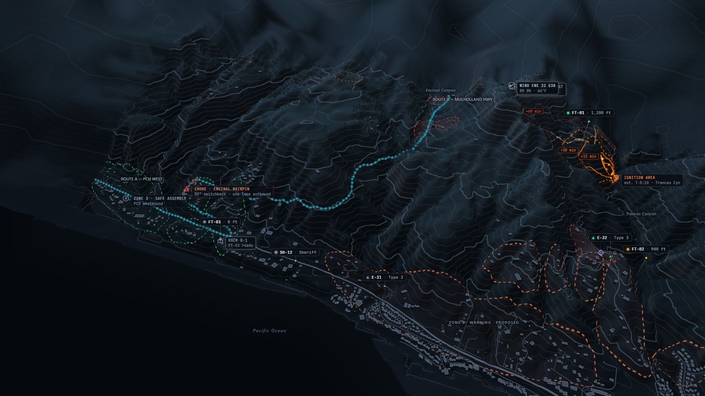

[MEA] FT-01 · 412 °C core · 198 m to nearest home [MOD] T+2:09 · Encinal Canyon Rd cutoff ZONE 1 · Order proposed · 37 homes ZONE 2 · Warning proposed · 345 homes ZONE 3 · Safe assembly ROUTE A · Encinal → PCH ROUTE B · Encinal north · alternate